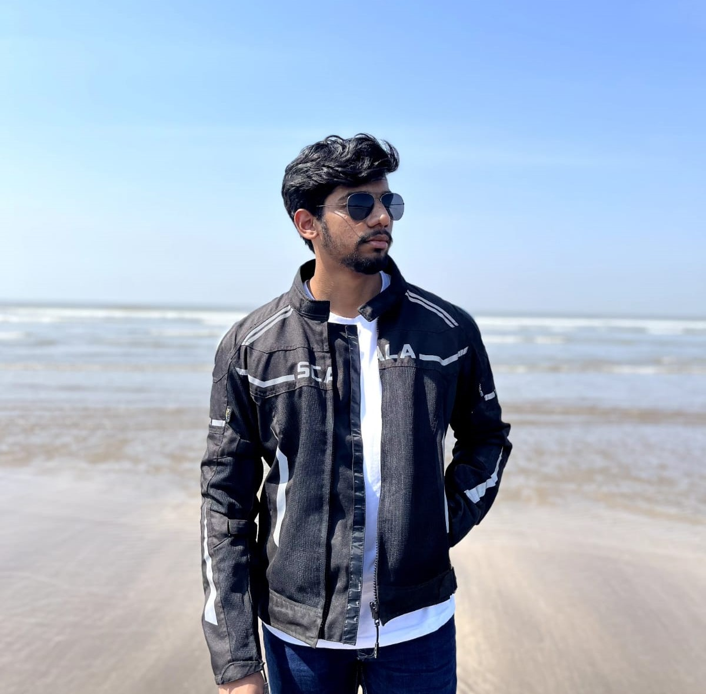

Projects
My Works
Learn more about me

I'm a Machine Learning Engineer and M.S. ECE graduate student at the University of Florida (graduating May 2026). Currently working as an ML Engineer Co-op at the UF Intelligent Clinical Care Center (IC3), building production-grade ML systems for medical image analysis at scale on HiPerGator HPC.
My work spans production ML engineering, deep learning research, and LLM-powered systems. At IC3, I engineer large-scale image processing pipelines processing 200M+ pixel slides. Previously at PwC, I built GPT-4 extraction pipelines and AWS microservice infrastructure for enterprise clients. I've also co-authored an arXiv preprint on deep learning for medical image super-resolution.
ML Engineer building production deep learning and LLM systems. Focused on medical imaging, computer vision, and scalable ML infrastructure.
University of Florida
GPA: 4.00/4.00
Coursework: Deep Learning in Medical Image Analysis, Database Management Systems, Computational Photography
Veermata Jijabai Technological Institute, Mumbai
GPA: 8.99/10.00
Coursework: Fundamentals of Machine Learning, Python Programming, Applied Linear Algebra, Probability and Statistics
PyTorch, TensorFlow, HuggingFace Transformers, Scikit-Learn, OpenCV · CNNs, Vision Transformers, Transfer Learning, MONAI
LangChain, LangGraph, LangSmith, OpenAI GPT-4/Vision · RAG, FAISS, ChromaDB, Pinecone, Multi-Agent Systems
Python, C++, SQL · CUDA, PyTorch DDP, HiPerGator HPC, AWS (ECS/EC2), Docker, Git, CI/CD
Machine Learning Engineer Co-op, Gainesville, FL
Research Assistant — Machine Learning, Gainesville, FL
Technology Consultant, Mumbai, India
My Works
Contact Me
Gainesville, Florida, USA
savantshamit@gmail.com
+1 (352) 709-6XXX

{kind=link}
{kind=link}
{kind=link}
{kind=link}
{kind=link}
{kind=link}
{kind=link}
{kind=link}